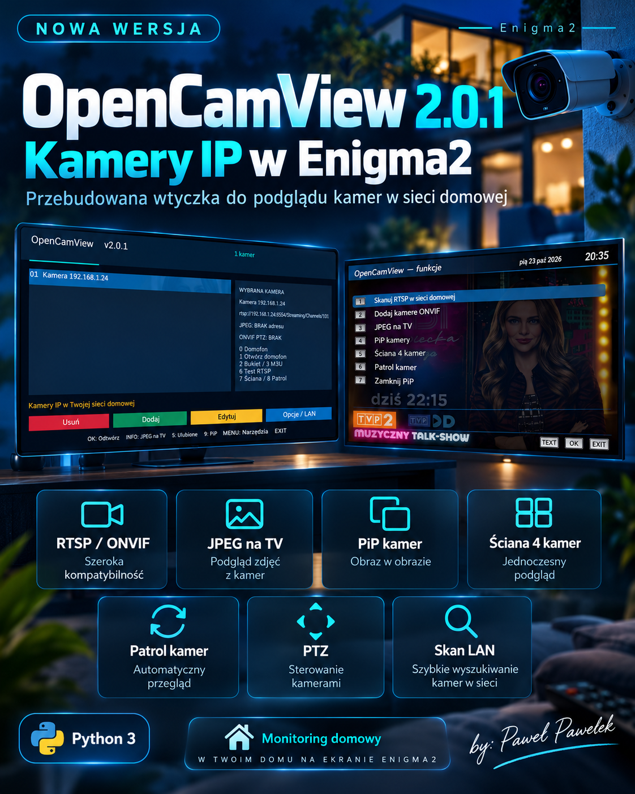

Dodawanie, usuwanie i edycja kamer RTSP oraz HTTP/HTTPS.
NOWA WERSJA • 23.10.2026 • ENIGMA2
OpenCamView 2.0.1
Twoje kamery IP na ekranie telewizora. Nowa, gruntownie przebudowana wtyczka dla Enigma2 z Pythonem 3 — monitoring własnej sieci domowej i podgląd strumieni RTSP/ONVIF.

AKTUALIZACJA 2.0.1
Nowy interfejs i monitoring kamer
Przeprojektowany granatowo-turkusowy interfejs w stylu AIO Panel i IPTV Dream, czytelne przyciski pilota i poprawki stabilności. Naprawiono zawieszanie Enigma2 podczas dodawania kamery oraz ulepszono opisy funkcji.
Najważniejsze funkcje
Wykrywanie urządzeń i profili ONVIF, wyszukiwanie źródeł RTSP w sieci.
Pełny ekran, JPEG na ekranie telewizora i szybki podgląd kamery wejściowej.
Obraz w obrazie, gdy pozwala na to tuner i jego odtwarzacz.
Wielokamerowy podgląd i automatyczny patrol.
Obracanie i zbliżanie obrazu na zgodnych kamerach ONVIF.
Ulubione kamery i szybki dostęp do wybranych urządzeń.
Eksport źródeł do bukietów Enigma2 i list M3U.
Kopie zapasowe i zabezpieczenie konfiguracji.
Możliwości PiP, PTZ i dekodowania strumienia zależą od modelu tunera, obrazu Enigma2 i funkcji kamery.
Instalacja OpenCamView 2.0.1
Wymagany jest Python 3. Możesz zainstalować wtyczkę w AIO Panel → Wtyczki Online, przez terminal tunera albo z pobranego pakietu IPK/DEB.
Instalacja z GitHuba
wget -q -O - https://raw.githubusercontent.com/OliOli2013/OpenCamView-Plugin/main/installer.sh | /bin/shZ pliku IPK umieszczonego w /tmp
opkg install /tmp/enigma2-plugin-extensions-opencamview_2.0.1_all.ipkZ pliku DEB umieszczonego w /tmp (obrazy z dpkg)
dpkg -i /tmp/enigma2-plugin-extensions-opencamview_2.0.1_all.debPo instalacji wykonaj restart GUI Enigma2.
Kontrola integralności pobierania
IPK SHA-256: b05a94e3184149a373f7e91fa1ab5601ba0c5c4a66d52bc57325b362bd18bf03
DEB SHA-256: 3c5c2b101681822cbf71f34fe181567745bce1726edaf72028add6624d57ebd0
Data wydania: 23.10.2026 • Autor: Paweł Pawełek